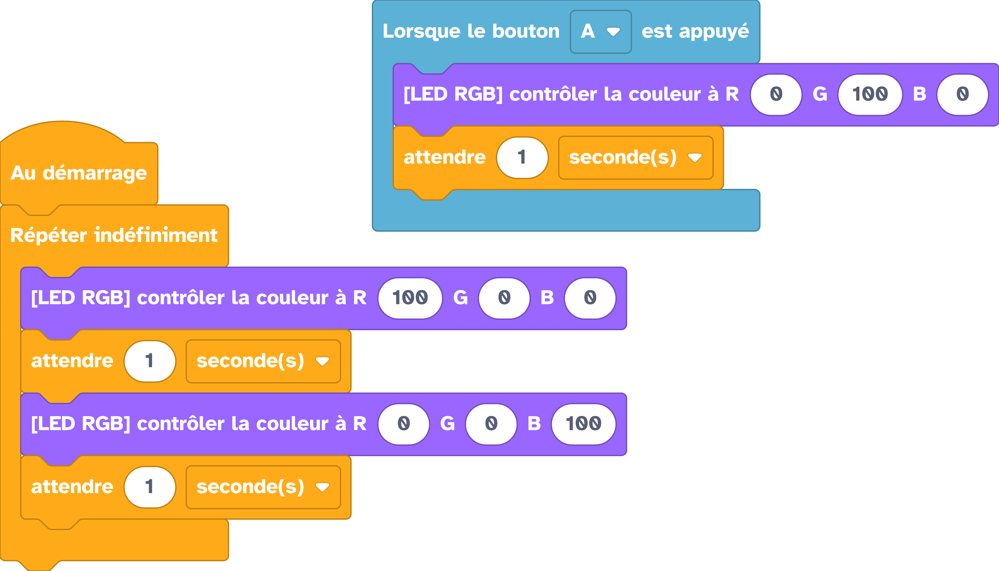

Bouton poussoir avec interruption¶
Faire quelque chose dès qu'un bouton est appuyé puis relâché.
Branchement¶

Exemple¶
Dans l'exemple ci-dessous, nous allons faire clignoter la LED RGB de la Galaxia en rouge pendant 1 seconde puis en bleue pedant une seconde. Si le bouton A est appuyé puis relâché (cet événement est appelé une interruption) alors la LED RGB passera en verte pendant une seconde :

# On importe les modules dont on a besoin
import utime
from thingz import *
def bouton_A_relache(button):
# On passe la LED RGB à verte
led.set_colors(0, 100, 0)
utime.sleep(1)
# On accroche l'interruption à la fonction bouton_A_relache
button_a.on_button_pressed(bouton_A_relache)
while True:
# On passe la LED RGB à rouge
led.set_colors(100, 0, 0)
utime.sleep(1)
# On passe la LED RGB à bleue
led.set_colors(0, 0, 100)
utime.sleep(1)
Aller plus loin¶
Dans l'exemple ci-dessus, nous utilisons le module thingz qui est décrit en détails ici.